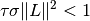

pdhg_stepsize¶
-
odl.solvers.nonsmooth.primal_dual_hybrid_gradient.pdhg_stepsize(L, tau=None, sigma=None)[source]¶ Default step sizes for
pdhg.- Parameters
- L
Operatoror float Operator or norm of the operator that are used in the
pdhgmethod. If it is anOperator, the norm is computed withOperator.norm(estimate=True).- taupositive float, optional
Use this value for
tauinstead of computing it from the operator norms, see Notes.- sigmapositive float, optional
The
sigmastep size parameters for the dual update.
- L
- Returns
- taufloat
The
taustep size parameter for the primal update.- sigmatuple of float
The
sigmastep size parameter for the dual update.
Notes
To guarantee convergence, the parameters
 ,
,  and
and  need to satisfy
need to satisfy
This function has 4 options,
/ given or not
given.Neither
nor are given, they are chosen asIf only
is given, is set toIf only
is given, is set
toIf both are given, they are returned as-is without further validation.